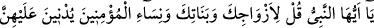
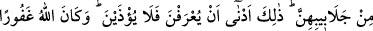
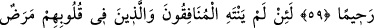
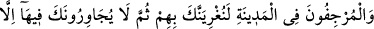
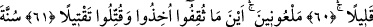
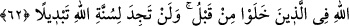

DIŞ ÖRTÜLERİNİ
ÜSTLERİNE ALMALARINI
SÖYLE!
59. Ey Peygamber! Hanımlarına, kızlarına ve mü’minlerin kadınlarına (bir ihtiyaç
için dışarı çıktıkları zaman) dış örtülerini üstlerine almalarını söyle. Onların
tanınması ve incitilmemesi için en elverişli olan budur. Allah bağışlayandır,
esirgeyendir.
60. Andolsun iki yüzlüler ile kalplerinde hastalık bulunanlar (fuhuş düşüncesi
taşıyanlar) ve şehirde kötü haber yayanlar (bu hallerinden) vazgeçmezlerse, seni
onlara musallat ederiz (onlarla savaşmanı ve onları şehirden sürüp çıkarmanı sana
emrederiz); sonra orada, senin yanında ancak az bir zaman kalabilirler.
61. Hepsi de lânetlenmiş olarak nerede ele geçirilirlerse, yakalanır ve mutlaka
öldürülürler.
62. Allâh’ın önceden geçenler hakkındaki kanunu budur. Allâh’ın kanununda asla
bir değişiklik bulamazsın.
“Ey Peygamber! Hanımlarına,” Peygamberimiz vefat ettiğinde dokuz hanımı vardı.
Bunlar Âişe, Hafsa, Ümmü Habîbe, Ümmü Seleme, Sevde, Zeyneb, Meymûne,
Safiyye, Cüveyriye (r.anhünne)’dir. Onların nesebleri, durumları ve vasıfları
bakımından tafsilat daha önce geçmişti.
“Kızlarına” Hz. Peygamber (s.a.)’in dördü öz, dördü üvey sekiz kızı vardır. Öz
olanların tamamı Hz. Hatice (r.anhâ)’dan doğmuşlardır. Onlar Zeyneb, Rukıyye, Ümmü
Gülsüm ve Fâtıma (r.anhâ)’dır. Hz. Fâtıma hariç diğer üçü Hz. Peygamber (s.a.)
hayattayken vefat etmişlerdir. Hz. Fâtıma ise Hz. Peygamber (s.a.)’in vefatından sonra
altı ay yaşamıştır. Üvey kızları Ümmü Seleme (r.a.)’nin kızlarıdır. Onlar Berre,
Seleme, Amre ve Dürre (r.anhâ)’dır.